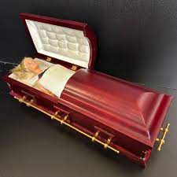
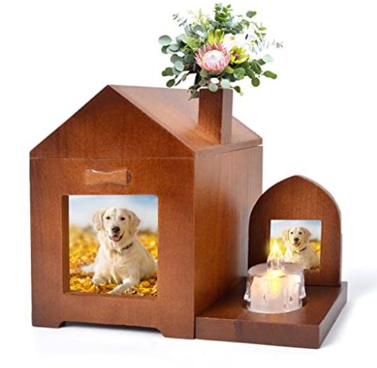
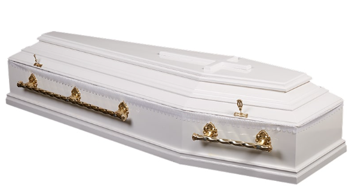

Pachetul de baza contine un sicriu cu design la alegere, un costum standard (femeie/barbat) precum si servicile de imbalsamare, transport si inmormantare.
- Sicriul clasic simplu
- Sicriul cu incalzire si buton de urgenta (pentru cei ce sunt in moarte clinica si totusi exista o speranta)
- Sicrie pentru animale
- Sicriul XXL pentru persoanele mai corpolente (150+kg)
